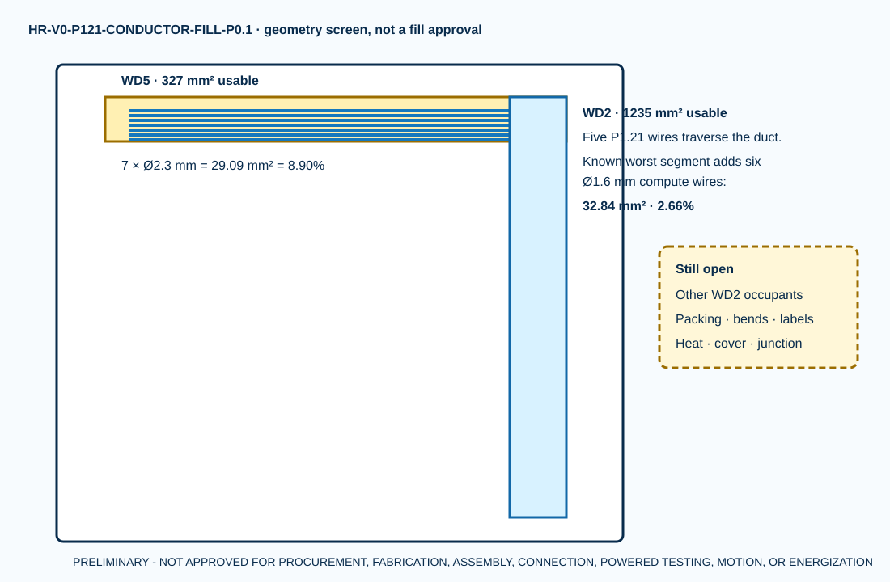

Exact blue 16 AWG, 100 ft candidate on hold
WD5 nominal-area geometry screen
Worst currently enumerated WD2 cross-section
No cut length, protection, thermal result or work authority
The seven P1.21 wires now have an exact orderable construction candidate. Blue is not released as the project color convention: the current red XD24 and blue XD0 distribution-block colors create an identification conflict that a qualified US/Boston electrical review must disposition before procurement.

Fill arithmetic
| Screen | Known conductors | Area mm² | Published-area ratio | Disposition |
|---|---|---|---|---|
| FILL-WD5 | 7 x Belden 3057 at nominal OD 2.3 mm | 29.08 | 8.89% | GEOMETRY INPUT ONLY - TOTAL FILL NOT ACCEPTED |
| FILL-WD2-A | 5 x Belden 3057 at nominal OD 2.3 mm | 20.77 | 1.68% | KNOWN MINIMUM ONLY |
| FILL-WD2-B | 5 x 3057 plus 6 x 3051 compute candidates | 32.84 | 2.66% | KNOWN MAXIMUM AMONG ENUMERATED ROUTES ONLY |
| FILL-WD2-C | 5 x 3057 plus 5 x 3051 field candidates | 30.83 | 2.50% | KNOWN MINIMUM ONLY |
These ratios use nominal circular outside-diameter envelopes. They are not fill or thermal approval because installed packing, labels, ties, bends, covers, junction geometry, ambient, duty and additional WD2 occupants are unresolved.
Seven candidate conductors
| ID | Endpoints | Centerline mm | Planning duct | Cut length |
|---|---|---|---|---|
| C-01 | XD24:02 → SR1:A1 | 1370.25 | WD2 + WD5 | SELECTION REQUIRED |
| C-02 | XD24:06 → KWD1:A1 | 1300.25 | WD2 + WD5 | SELECTION REQUIRED |
| C-03 | XD24:07 → KWD1:11 | 1300.25 | WD2 + WD5 | SELECTION REQUIRED |
| C-04 | XD24:09 → KWD2:A1 | 1274.25 | WD2 + WD5 | SELECTION REQUIRED |
| C-05 | XD24:10 → KWD2:21 | 1274.25 | WD2 + WD5 | SELECTION REQUIRED |
| C-06 | KWD1:14 → KWD2:11 | 86.00 | WD5 | SELECTION REQUIRED |
| C-07 | KWD2:14 → SRA1:A1 | 118.00 | WD5 | SELECTION REQUIRED |
Voltage drop remains open
Belden's controlled live record does not publish DCR, and received cut lengths do not exist. The package therefore records the exact equations and a four-wire received-lot measurement requirement instead of inventing a resistance value.
What this does not close
F24 and fault-current coordination, final colors, terminations, ferrules/tools, cut lengths, full WD2 occupancy, conductor heating, bend/entry geometry, installed inspection, P1.21 acceptance and qualified electrical/functional-safety review all remain open.